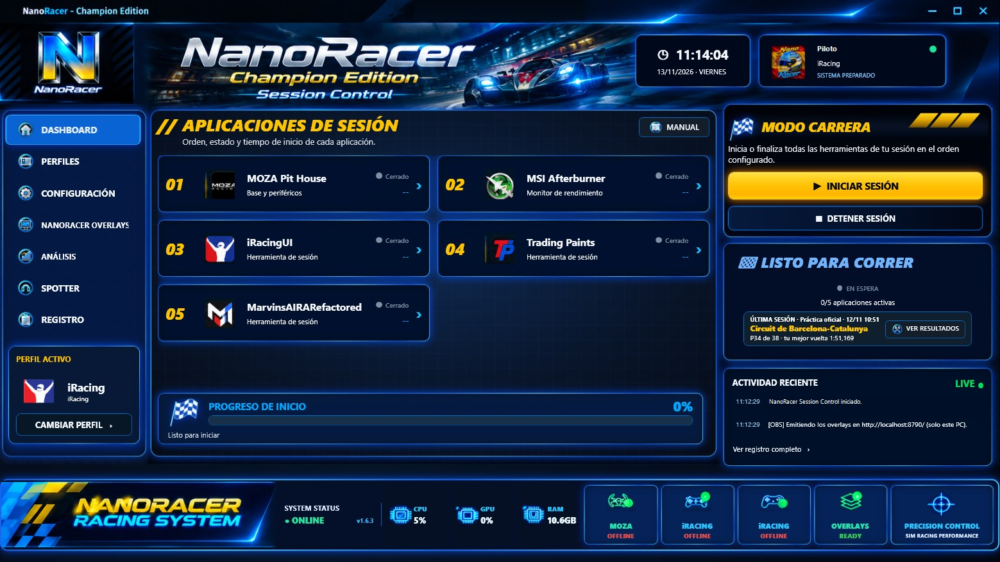

Guía › PRIMEROS PASOS › El Dashboard
El Dashboard
La pantalla principal. Se abre con DASHBOARD en el menú de la izquierda.
El Dashboard

QUÉ HAY EN LA PANTALLA
- APLICACIONES DE SESIÓN
- una tarjeta por programa del perfil activo, con su número de orden (01, 02…), su estado y lo que tardó en abrirse.
- Icono de cada tarjeta
- si lo pulsas, abre solo ese programa (si ya está abierto, no hace nada).
- PROGRESO DE INICIO
- la barra verde que se llena mientras se abren los programas, y debajo lo que está haciendo.
- MODO CARRERA
- los botones ▶ INICIAR SESIÓN y ■ DETENER SESIÓN.
- Recuadro de estado
- cuántos programas están abiertos («1/5 aplicaciones activas») y tu última sesión. Cuando estás en pista en iRacing, se convierte en el overlay de Sesión.
- ACTIVIDAD RECIENTE
- lo último que ha hecho NanoRacer.
- PERFIL ACTIVO
- abajo a la izquierda: el perfil que estás usando y el botón CAMBIAR PERFIL.
ESTADOS DE CADA PROGRAMA
- Ejecutándose
- está abierto (verde).
- Cerrado
- no está abierto.
- Iniciando… / Cerrando…
- NanoRacer lo está abriendo o cerrando.
- Error al iniciar / Error al cerrar
- no se pudo. El motivo queda en ACTIVIDAD RECIENTE y en el REGISTRO.
ESTADO DE LA SESIÓN (recuadro de la derecha)
- LISTO PARA CORRER
- están abiertos todos los programas del perfil.
- SESIÓN INCOMPLETA
- hay algunos abiertos, pero no todos.
- EN ESPERA
- no hay ninguno abierto.
- REVISAR SESIÓN
- alguno falló al abrirse o al cerrarse.
- SIN APLICACIONES
- el perfil no tiene programas.
ÚLTIMA SESIÓN
Si hay resultados guardados, sale tu última sesión: tipo (Práctica, Clasificación, Carrera…), fecha, circuito, tu posición y tu mejor vuelta, tal y como los dio iRacing. «🏁 VER RESULTADOS» abre la ventana de RESULTADOS.
LA CABECERA (arriba a la derecha)
- Reloj y fecha
- los de tu ordenador.
- Foto
- clic para poner otra imagen (PNG, JPG o BMP). Clic derecho → «Restaurar imagen original».
- Nombre del piloto
- NanoRacer coge tu nombre de iRacing la primera vez que entras en una sesión (hasta entonces pone «Piloto»). Clic para escribir otro (Enter guarda, Esc cancela). Clic derecho → «Usar mi nombre de iRacing».
LA BARRA DE ABAJO
- CPU, GPU, RAM
- lo que está usando tu ordenador ahora.
- Base del volante
- la marca de la base que tengas entre tus programas (MOZA, FANATEC, SIMAGIC, SIMUCUBE, LOGITECH, THRUSTMASTER o ASETEK). READY si su programa está abierto, OFFLINE si no.
- iRACING (el primero)
- READY si está abierta la interfaz de iRacing (el programa de iRacing de tu lista).
- iRACING (el segundo)
- ONLINE si el simulador de iRacing está abierto (estás en el coche o cargando).
- OVERLAYS
- READY si tienes encendido al menos un overlay.